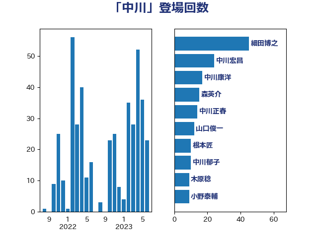

単語「中川」

| 細田博之 | 自由民主党 | 45 回 |
| 中川宏昌 | 公明党 | 24 回 |
| 中川康洋 | 公明党 | 17 回 |
| 森英介 | 自由民主党 | 15 回 |
| 中川正春 | 立憲民主党 | 14 回 |
| 山口俊一 | 自由民主党 | 12 回 |
| 根本匠 | 自由民主党 | 10 回 |
| 中川郁子 | 自由民主党 | 10 回 |
| 木原稔 | 自由民主党 | 9 回 |
| 小野泰輔 | 日本維新の会 | 9 回 |
| 海江田万里 | 立憲民主党 | 7 回 |
| 中川貴元 | 自由民主党 | 7 回 |
| 竹内譲 | 公明党 | 6 回 |
| 浮島智子 | 公明党 | 6 回 |
| 鈴木俊一 | 自由民主党 | 5 回 |
| 橋本岳 | 自由民主党 | 5 回 |
| 松村祥史 | 自由民主党 | 5 回 |
| 岡本三成 | 公明党 | 5 回 |
| 階猛 | 立憲民主党 | 4 回 |
| 長島昭久 | 自由民主党 | 4 回 |
| 野村哲郎 | 自由民主党 | 4 回 |
| 玉木雄一郎 | 国民民主党 | 4 回 |
| 漆間譲司 | 日本維新の会 | 4 回 |
| 山口壯 | 自由民主党 | 4 回 |
| 嘉田由紀子 | 無所属 | 4 回 |
| 伴野豊 | 立憲民主党 | 4 回 |
| 伊藤忠彦 | 自由民主党 | 4 回 |
| 三木圭恵 | 日本維新の会 | 4 回 |
| 黄川田仁志 | 自由民主党 | 3 回 |
| 葉梨康弘 | 自由民主党 | 3 回 |
| 石田真敏 | 自由民主党 | 3 回 |
| 石川香織 | 立憲民主党 | 3 回 |
| 田畑裕明 | 自由民主党 | 3 回 |
| 柴山昌彦 | 自由民主党 | 3 回 |
| 斉藤鉄夫 | 公明党 | 3 回 |
| 岬麻紀 | 日本維新の会 | 3 回 |
| 岩谷良平 | 日本維新の会 | 3 回 |
| 宮崎勝 | 公明党 | 3 回 |
| 塩川鉄也 | 日本共産党 | 3 回 |
| 三谷英弘 | 自由民主党 | 3 回 |
| 鷲尾英一郎 | 自由民主党 | 2 回 |
| 高木毅 | 自由民主党 | 2 回 |
| 関芳弘 | 自由民主党 | 2 回 |
| 重徳和彦 | 立憲民主党 | 2 回 |
| 近藤昭一 | 立憲民主党 | 2 回 |
| 辻清人 | 自由民主党 | 2 回 |
| 谷田川元 | 立憲民主党 | 2 回 |
| 西村康稔 | 自由民主党 | 2 回 |
| 西岡秀子 | 国民民主党 | 2 回 |
| 篠原孝 | 立憲民主党 | 2 回 |
| 秋本真利 | 無所属 | 2 回 |
| 矢倉克夫 | 公明党 | 2 回 |
| 熊田裕通 | 自由民主党 | 2 回 |
| 河野義博 | 公明党 | 2 回 |
| 松本剛明 | 自由民主党 | 2 回 |
| 徳永エリ | 立憲民主党 | 2 回 |
| 平口洋 | 自由民主党 | 2 回 |
| 山田宏 | 自由民主党 | 2 回 |
| 小西洋之 | 立憲民主党 | 2 回 |
| 城井崇 | 立憲民主党 | 2 回 |
| 古川俊治 | 自由民主党 | 2 回 |
| 務台俊介 | 自由民主党 | 2 回 |
| 前川清成 | 日本維新の会 | 2 回 |
| 伊藤岳 | 日本共産党 | 2 回 |
| 中谷真一 | 自由民主党 | 2 回 |
| 下条みつ | 立憲民主党 | 2 回 |
| 上野賢一郎 | 自由民主党 | 2 回 |
| 高橋千鶴子 | 日本共産党 | 1 回 |
| 長友慎治 | 国民民主党 | 1 回 |
| 鈴木淳司 | 自由民主党 | 1 回 |
| 鈴木宗男 | 日本維新の会 | 1 回 |
| 野田佳彦 | 立憲民主党 | 1 回 |
| 赤澤亮正 | 自由民主党 | 1 回 |
| 赤池誠章 | 自由民主党 | 1 回 |
| 角田秀穂 | 公明党 | 1 回 |
| 西村明宏 | 自由民主党 | 1 回 |
| 羽田次郎 | 立憲民主党 | 1 回 |
| 笠浩史 | 無所属 | 1 回 |
| 竹詰仁 | 国民民主党 | 1 回 |
| 竹内真二 | 公明党 | 1 回 |
| 稲津久 | 公明党 | 1 回 |
| 神田憲次 | 自由民主党 | 1 回 |
| 田村貴昭 | 日本共産党 | 1 回 |
| 牧野たかお | 自由民主党 | 1 回 |
| 浜田聡 | NHK党 | 1 回 |
| 沢田良 | 日本維新の会 | 1 回 |
| 江藤拓 | 自由民主党 | 1 回 |
| 武部新 | 自由民主党 | 1 回 |
| 櫻田義孝 | 自由民主党 | 1 回 |
| 林芳正 | 自由民主党 | 1 回 |
| 新藤義孝 | 自由民主党 | 1 回 |
| 平林晃 | 公明党 | 1 回 |
| 島村大 | 自由民主党 | 1 回 |
| 島尻安伊子 | 自由民主党 | 1 回 |
| 岸田文雄 | 自由民主党 | 1 回 |
| 山東昭子 | 自由民主党 | 1 回 |
| 小沢雅仁 | 立憲民主党 | 1 回 |
| 寺田学 | 立憲民主党 | 1 回 |
| 宮内秀樹 | 自由民主党 | 1 回 |
| 室井邦彦 | 日本維新の会 | 1 回 |
| 奥野総一郎 | 立憲民主党 | 1 回 |
| 國重徹 | 公明党 | 1 回 |
| 吉田宣弘 | 公明党 | 1 回 |
| 吉川元 | 立憲民主党 | 1 回 |
| 古屋範子 | 公明党 | 1 回 |
| 北神圭朗 | 無所属 | 1 回 |
| 伊藤孝恵 | 国民民主党 | 1 回 |
| 井原巧 | 自由民主党 | 1 回 |
| 亀岡偉民 | 自由民主党 | 1 回 |
| 中西祐介 | 自由民主党 | 1 回 |
| 中根一幸 | 自由民主党 | 1 回 |
| 中島克仁 | 立憲民主党 | 1 回 |
| 三ッ林裕巳 | 自由民主党 | 1 回 |
| おおつき紅葉 | 立憲民主党 | 1 回 |